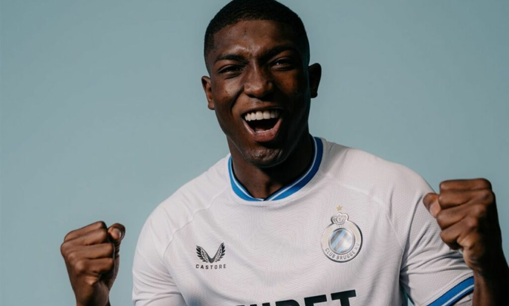

Calendario de ecuatorianos en la Champions League.

La Uefa Champions League regresa a la acción con la presencia de tres ecuatorianos
en la sexta jornada de la fase de liga.
Este martes 10 de diciembre inicia la sexta jornada de la fase de liga de la Uefa Champions
League, la última fecha de este 2024. Los ecuatorianos Piero Hincapié, Willian Pacho y Joel
Ordóñez estarán presentes en esta instancia crucial.
Los tricolores que estarán presentes en esta jornada son:
Willian Pacho y el PSG.
El PSG de Willian Pacho no atraviesa su mejor momento en el torneo. Con apenas cuatro puntos y
una sola victoria en cinco partidos, el club parisino se ubica en el puesto 25, fuera de los lugares
de clasificación.
Su próximo desafío será frente al RB Salzburgo, en el Red Bull Arena de Salzburgo, este martes 10
de diciembre a las 15:00 (hora de Ecuador).
Piero Hincapié y el Bayer Leverkusen.
El Bayer Leverkusen, equipo sensación de la temporada pasada, se mantiene en la pelea por la
clasificación directa a octavos de final. Con 10 puntos, ocupa el sexto puesto de la tabla general.
En esta jornada, recibirán al Inter de Milán en el BayArena, este martes 10 de diciembre a las 15:00.
Joel Ordóñez y el Club Brujas.
El Club Brujas, donde milita Joel Ordóñez, ha tenido una participación discreta en esta edición de
la Champions. Con dos victorias en cinco juegos, se ubican en el puesto 22 con siete puntos.
Su próximo compromiso será en Bélgica ante el Sporting Lisboa, en el Estadio Jan Breydel, este martes
10 de diciembre a las 15:00.